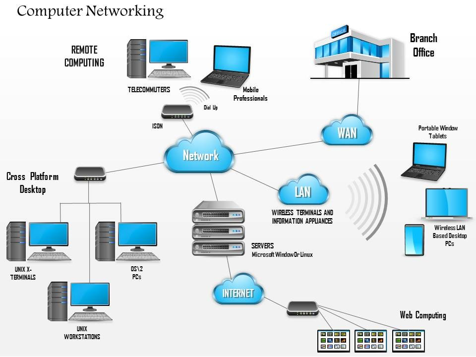

NETWORKING CONCEPTS
A networking device works between the end devices. It controls and forwards the flow of data. Based on the functionalities, a networking device can be categorized in three types; forwarding device, connecting device and the securing device.
The media provides connectivity between the end devices. Unless end devices are connected through the any kind of media, they cannot exchange the data or service. Mainly there are two types of media; Wireless media and wired media.
